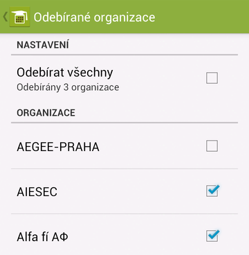

Pro přístup do nastavení aplikace klepněte na ikonku klíče v horním panelu (na starších verzích systému Android ji najdete v menu).
V této nabídce najdete možnosti nastavení týkající se událostí.
Připomínání události slouží k nastavení alarmu upozorňujícího Vás na blížící se začátek událostí. Pokud tedy nastavíte připomínání událostí na 10 minut před začátkem, budete alarmem ve 14:00 upozorněn na událost, která začíná ten den ve 14:10.
Pomocí možnosti Upozorňovat na nové si můžete nastavit notifikace o nových událostech. Tato možnost je ve výchozím nastavení vypnutá. Pokud ji zapnete, budete vždy upozorněni, pokud přibude nová událost.
 Zde si můžete nastavit, které studentské organizace Vás zajímají a od kterých chcete odebírat události. Ve výchozím nastavení jsou odebírány všechny organizace, nicméně pokud vyberete jen tři organizace, budete dostávat informace jen o událostech, které konají tyto tři vybrané organizace.
Toto je podobné nastavení jako Odebírané organizace, týká se ale typů odebíraných událostí.